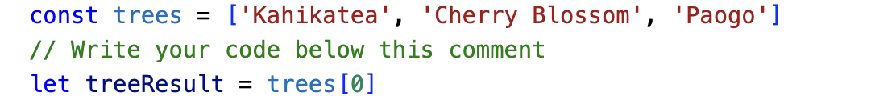
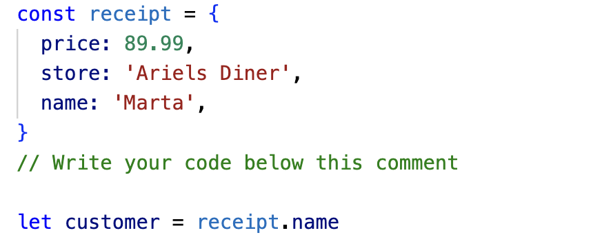
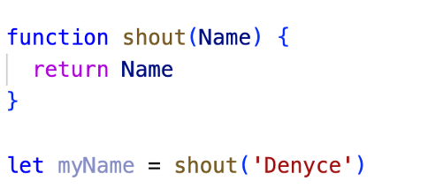

An analogy to describe JavaScript and its relationship to HTML and CSS.
JavaScript is an integral partner into making a webpage. An analogy for its relationship with HTML and CSS is like building a sims character. HTML is building the shape and body characteristics of your sim, CSS is getting to dress your sim to how you want it to look in a fashionable way, and JavaScript is bringing your sim to life, giving it the power to move around and interact.
Explain control flow and loops.
Control flow is the order in which statements are executed. The normal control flow is for statements to be read left to right top to bottom. This is like reading and following instructions for baking cupcakes. We read the instructions from left to right, top to bottom and following it step by step in a chronological order. Reading it any other way will stuff up your cupcakes!
Describe what the DOM is and an example of how you might interact with it.
DOM, also known as the Document Object Model is a representation of the webpage. The DOM structures the webpage so that other programs can change its structure, its style or even make the webpage interactive. When we create the HTML document of a website, the DOM looks at this document like a tree of nodes where elements are considered the branches and leaves. The root of this tree would be the window, following this is the document, and branches off this are elements like the head, body and paragraph. A way we can interact with the DOM is by using JavaScript. JavaScript can change or modify an HTML document. An example of this is changing the font colour of a paragraph. We can also make the webpage more interactive by adding events so that when we click a button, an action follows. Effectively changing the way your webpage looks.
Explain the difference between accessing data from arrays and objects.
Arrays and objects are like containers within JavaScript, both having the ability to contain items but in different ways. To access items within them are also very different.
From this example from a recent challenge I completed, we can see that the information being held in the array ‘trees’ are contained in between these brackets [ ]. In programming, we number lists starting from 0. So, if we want to retrieve ‘Kahikatea’ from the array trees, we will first assign a new variable to contain this information, and in this example, it is ‘treeResult’, and retrieve the information by calling trees [0]. If we wanted to access ‘Cherry Blossom’ then we would have to call trees[1] and so on. To access objects in JavaScript, we call the object and its properties. Another way of thinking about this is wanting to access information about different parts of the car. In this example, the car is the object and the headlights, sidemirrors, car door even, are the properties. To do this we would write the code ‘object.property’. See example below from one of the challenges I completed.
From this example, we can see that I was wanting to access a name (property) in the receipt (object). I did this by assigning a new variable to contain this information and programming the code receipt.name to retrieve this information
Explain what functions are and why they are helpful.
Functions are code that perform a specific task it’s assigned. Below is an example of a code I made for a challenge I completed:
To create a block of code using function, we assign it a name and a ‘parameter’. What we do with this function is placed within the { } brackets. In this example, I am wanting to return the parameter ‘name’. Below the function is calling for the function shout. It is also shows that we can change the value of the parameter which was changed to ‘Denyce’. This means that when myName variable is used, it will have the value of the function shout, and that is returning the parameter ‘Denyce’.